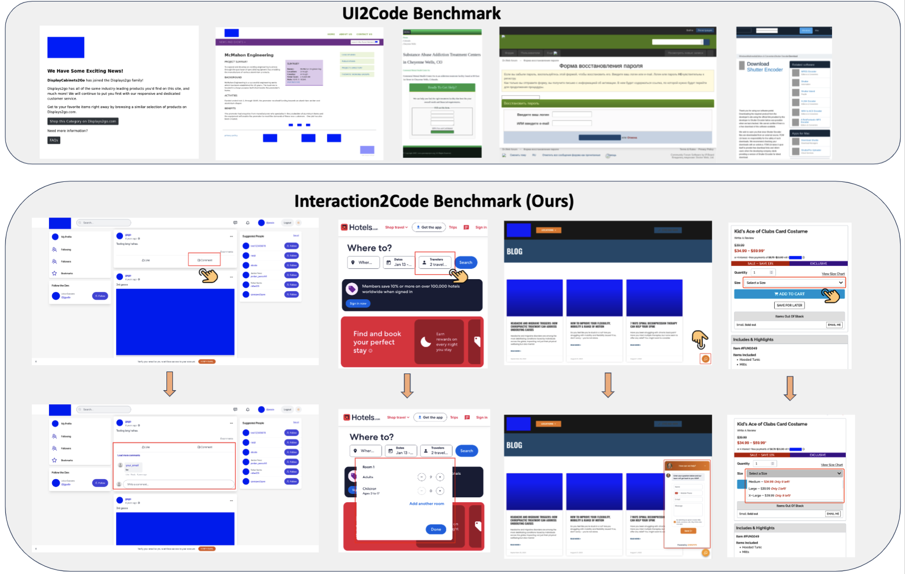

Multimodal Large Language Models (MLLMs) have demonstrated remarkable performance on the design-to-code task, i.e., generating UI code from UI mock-ups. However, existing benchmarks only contain static web pages for evaluation and ignore the dynamic interaction, limiting the practicality, usability and user engagement of the generated webpages. To bridge these gaps, we present the first systematic investigation of MLLMs in generating interactive webpages. Specifically, we formulate the Interaction-to-Code task and establish the Interaction2Code benchmark, encompassing 127 unique webpages and 374 distinct interactions across 15 webpage types and 31 interaction categories. Through comprehensive experiments utilizing state-of-the-art (SOTA) MLLMs, evaluated via both automatic metrics and human assessments, we identify four critical limitations of MLLM on Interaction-to-Code task: (1) inadequate generation of interaction compared with full page, (2) prone to ten types of failure, (3) poor performance on visually subtle interactions, and (4) insufficient undestanding on interaction when limited to single-modality visual descriptions. To address these limitations, we propose four enhancement strategies: Interactive Element Highlighting, Failureaware Prompting (FAP), Visual Saliency Enhancement, and Visual-Textual Descriptions Combination, all aiming at improving MLLMs’ performance on the Interaction-toCode task. The Interaction2Code benchmark and code are available in https://github. com/WebPAI/Interaction2Code.
We show the comparison between UI2Code benchmark and our Interaction2Code benchmark. UI2Code benchmark only contains the static webpage, whereas Interaction2Code contains interactive webpage, which is represented by interactive prototyping.
| Model | Prompt | CLIP | SSIM | Text | Position | Implement Rate |
|---|---|---|---|---|---|---|
| Qwen2.5-vl-3B-instruct | Direct | 0.2100 | 0.1531 | 0.0415 | 0.2090 | 0.3449 |
| CoT | 0.1219 | 0.0894 | 0.0352 | 0.1212 | 0.1979 | |
| Mark | 0.1706 | 0.1188 | 0.0514 | 0.1706 | 0.2647 | |
| Average | 0.1675 | 0.1204 | 0.0427 | 0.1669 | 0.2692 | |
| Qwen2.5-vl-7B-instruct | Direct | 0.3230 | 0.2177 | 0.0952 | 0.2529 | 0.4786 |
| CoT | 0.2806 | 0.1981 | 0.0744 | 0.2259 | 0.4305 | |
| Mark | 0.3541 | 0.2468 | 0.1348 | 0.2798 | 0.5267 | |
| Average | 0.3192 | 0.2209 | 0.1015 | 0.2529 | 0.4786 | |
| Qwen2.5-vl-72B-instruct | Direct | 0.4624 | 0.3207 | 0.2450 | 0.3950 | 0.6524 |
| CoT | 0.5090 | 0.3692 | 0.2376 | 0.4385 | 0.7380 | |
| Mark | 0.4992 | 0.3621 | 0.2995 | 0.4541 | 0.7112 | |
| Average | 0.4902 | 0.3507 | 0.2607 | 0.4292 | 0.7005 | |
| Gemini-1.5-flash | Direct | 0.4737 | 0.3616 | 0.2809 | 0.4320 | 0.6738 |
| CoT | 0.5093 | 0.3854 | 0.3217 | 0.4511 | 0.7112 | |
| Mark | 0.5194 | 0.3898 | 0.3454 | 0.4612 | 0.7326 | |
| Average | 0.5008 | 0.3789 | 0.3160 | 0.4481 | 0.7059 | |
| GPT-4o-20240806 | Direct | 0.5605 | 0.4149 | 0.3590 | 0.4888 | 0.7754 |
| CoT | 0.5234 | 0.4013 | 0.3663 | 0.4668 | 0.7273 | |
| Mark | 0.5955 | 0.4488 | 0.4474 | 0.5225 | 0.8128 | |
| Average | 0.5598 | 0.4217 | 0.3909 | 0.4927 | 0.7718 | |
| Claude-3.5-Sonnet-20240620 | Direct | 0.5674 | 0.4209 | 0.3833 | 0.5123 | 0.7914 |
| CoT | 0.5606 | 0.4005 | 0.3662 | 0.5085 | 0.7727 | |
| Mark | 0.5944 | 0.4282 | 0.4319 | 0.5149 | 0.7968 | |
| Average | 0.5742 | 0.4165 | 0.3938 | 0.5119 | 0.7870 |
(a) Interactive element missing: MLLMs do not generate interactive elements. As shown in Figure (a), there is a chat button in the upper right corner of the reference web page. When clicked, a chat window pops up. However, there is no such button in the generated web page, and users cannot perform any operation. (b) No interaction: There is no interaction in the generated webpage. As shown in Figure (b), clicking button M in the original webpage will switch to the information of size "M". However, clicking "M" button in the generated, there is no change of the size information. It should be noted here that sometimes the lack of interaction does not result in the unavailability of functions. For example, suppose a web page contains a menu bar that can display detailed information after clicking. If MLLM does not achieve the click effect, but has displayed the detailed menu information, it does not affect the functionality of the web page. (c) Wrong interactive element: MLLMs implement the interactive function on the wrong element. As shown in Figure (c), in the original webpage, after clicking "I'm donating on behalf of a company or organisation", two input boxes will appear. However, in the generated webpage, the input box will only appear after clicking "I' like to add 0.00 to my donation to cover any fees." (d) Wrong type of interactive element: The types of interactive elements generated by MLLM are wrong. As shown in Figure (d), the element for adjusting the price in the original web page is of input type, while the element for adjusting the price in the generated web page is of progress type. (e) Wrong position of interactive element: The interactive elements generated by MLLM are positioned incorrectly. As shown in Figure (e), the button in the original webpage is in the upper right corner of the image, while the generated button is below the image.
(f) Wrong position after interaction: The interactive effects generated by MLLM are in the wrong position. As shown in Figure (f), after clicking the dialogue button, the pop-up window is displayed in the lower left corner of the reference webpage, but appears in the middle of the generated webpage. (g) Wrong type of interaction effects: As shown in Figure (g), in the reference webpage, the element that appears after clicking select is of option type, but in the generated web page, the element that appears is of text type. (h) Effect on wrong element: MLLMs achieve the effect of interaction on the wrong elements. As shown in Figure (h), in the reference webpage, after clicking the "dark" button, the background color of the web page turns black. However, in the generated web page, after clicking the "dark" button, the block turns black and the background does not change. (i) Partial Implementation: MLLMs only implement a part of the interactive functionality. As shown in Figure (i), in the reference webpage, after clicking the select button, the button will become selected, and will return to its original state when clicked again. However, in the generated web page, the button can only be selected but not unselected. (j) Wrong function: MLLM implements the wrong function. As shown in Figure (j), in the original webpage, clicking the button will cause a date selection box to appear, but in the generated webpage, clicking the button will generate a date display box.
@article{xiao2024interaction2code,
title={Interaction2Code: Benchmarking MLLM-based Interactive Webpage Code Generation from Interactive Prototyping},
author={Jingyu Xiao and Yuxuan Wan and Yintong Huo and Zixin Wang and Xinyi Xu and Wenxuan Wang and Zhiyao Xu and Yuhang Wang and Michael R. Lyu},
journal={arXiv preprint arXiv:2411.03292},
year={2025}
}